Включение синхронизации данных
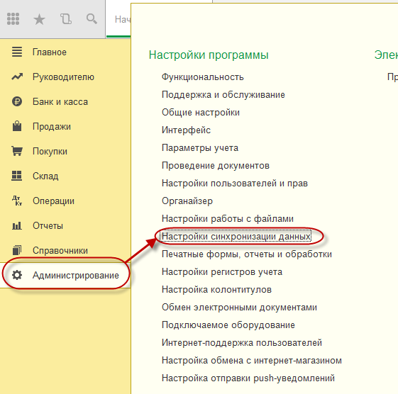
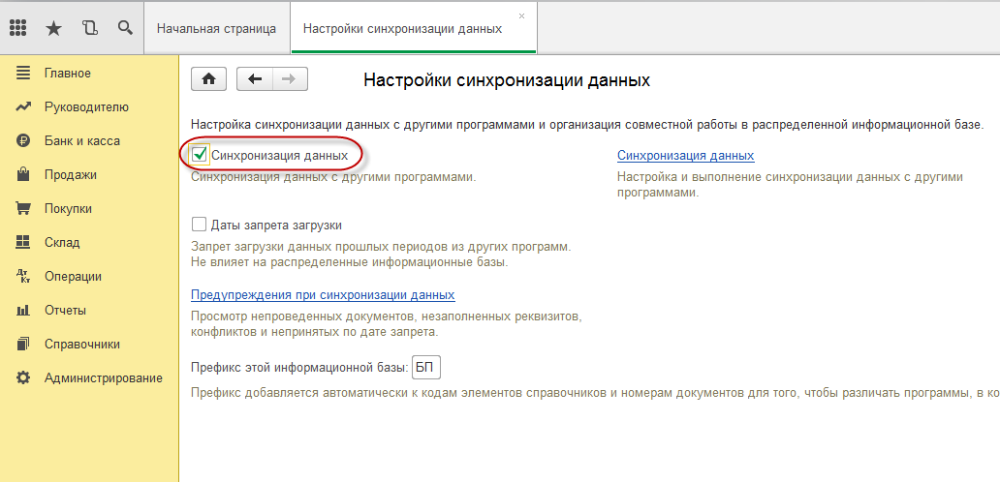
Настройка синхронизации при обмене через локальный или сетевой каталог
Далее описание настройки синхронизации при выборе варианта подключения к информационной НЕ через прямое подключение. При прямом подлкючении к нформационной базе настройки, указанные ниже уже выполнены автоматически при первом обмене.
Настройка синхронизации при обмене через локальный или сетевой каталог. По кнопке "Настроить синхронизацию данных" выбираем синхронизацию с "Другой программой":
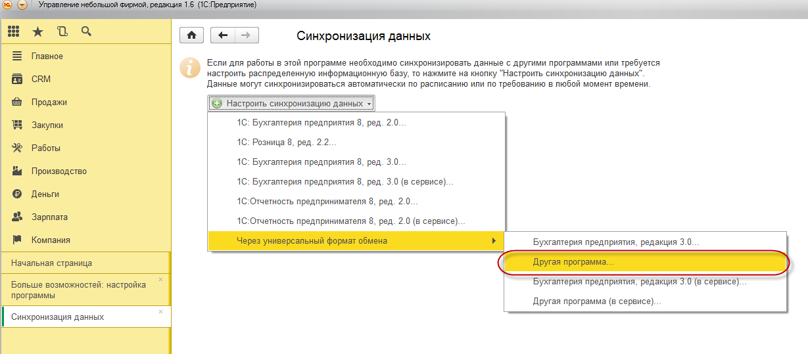
На первой странице мастера выбираем способ настройки "Загрузить файл с настройками, созданный в другой программе" и выбираем тот файл который был создан при настройке синхронизации в 1С: CRM 3.0.
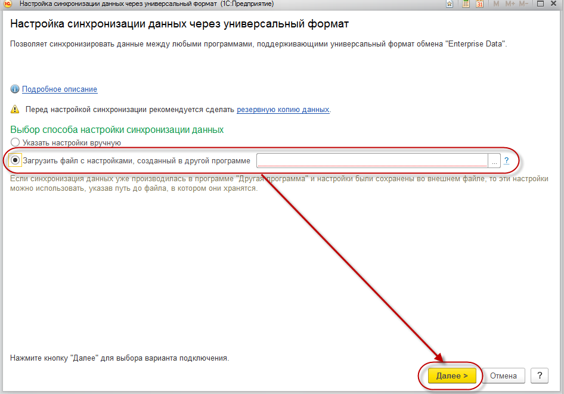
Далее идут настройки аналогичные тем, что были проделаны в 1С: CRM 3.0. На итоговой странице мастера жмем кнопку "Готово". Далее запустится мастер синхронизации данных. Так как еще не указан путь к внешней обработке менеджера обмена, то отказываемся от синхронизации по кнопке "Отмена".
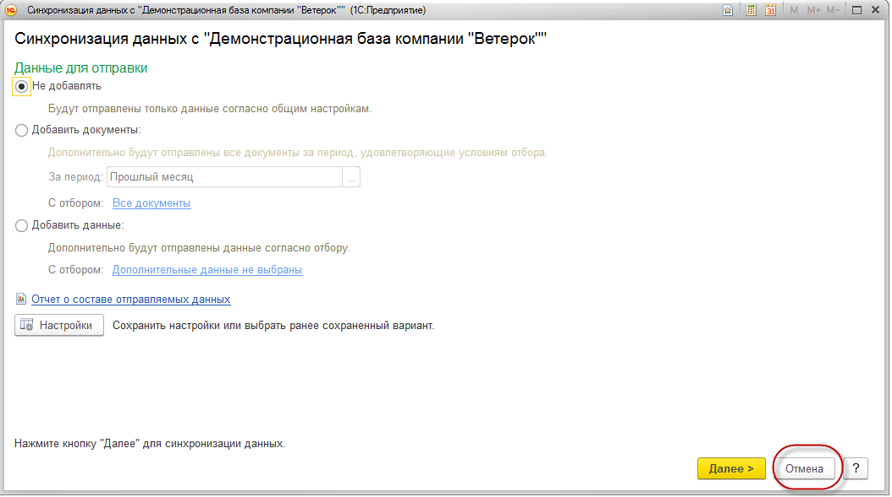
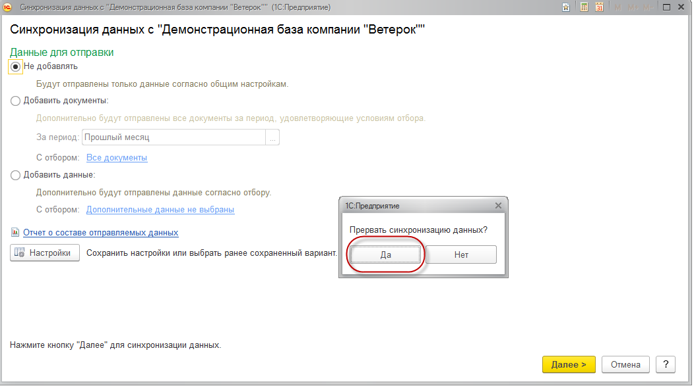
Подключение внешней обработки менеджера обмена данными
Переходим в настройки созданной синхронизации данных:
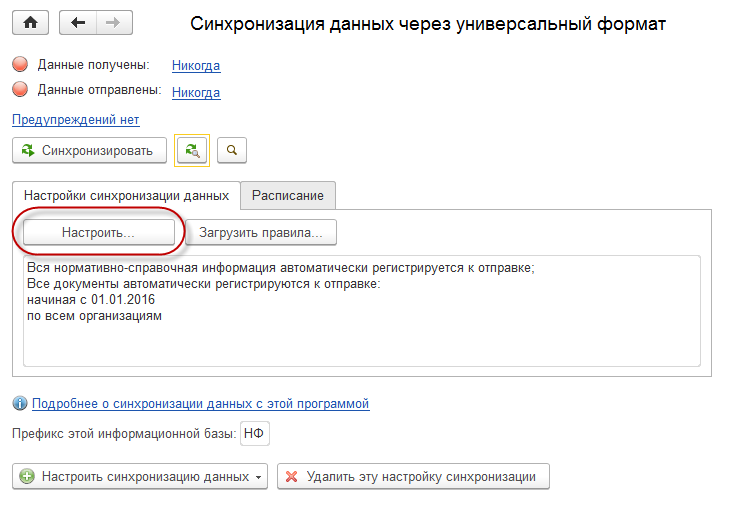
В настройках переходим на закладку "Служебные", указываем путь к внешней обработке менеджера обмена, записываем и закрываем настройки.
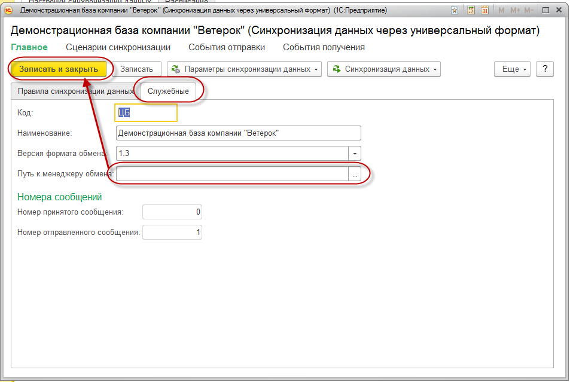
Важно! Для отображения закладки "Служебные" необходимо в форме настройки синхронизации по кнопке "Ещё" перейти к изменению формы.
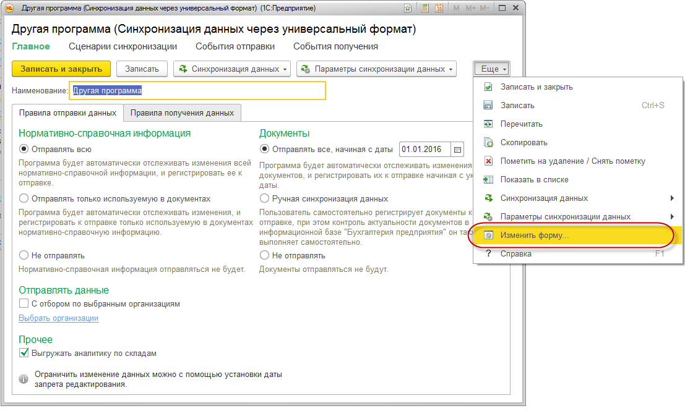
Поставить галку для группы "Служебная информация" и нажать кнопку "ОК".
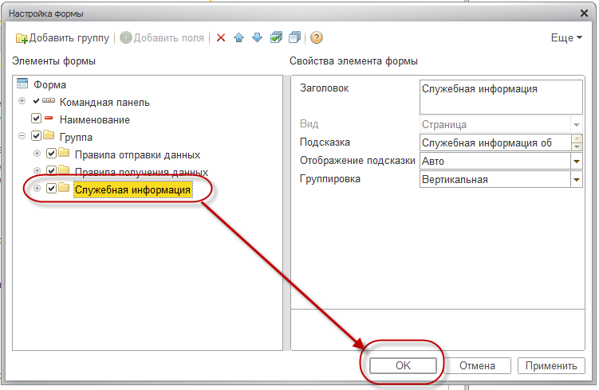
Теперь можно указать путь к внешней обработке менеджера обмена:
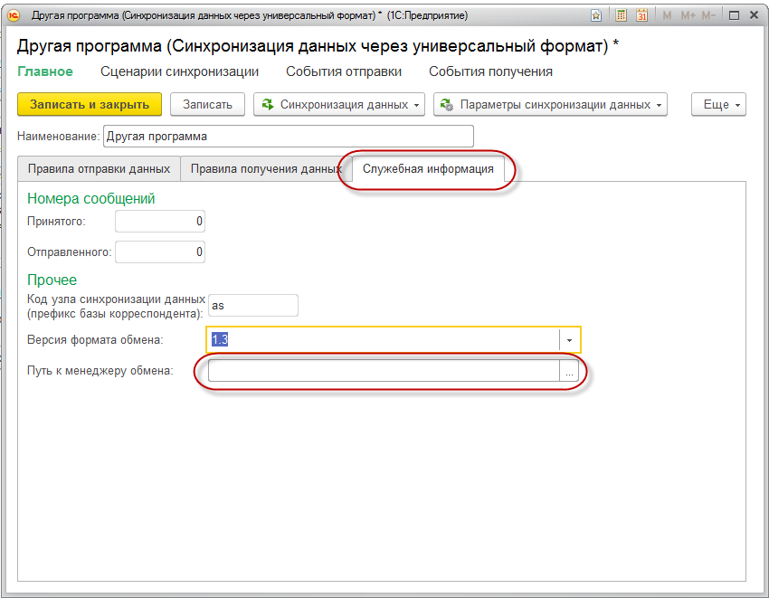
После того как указали путь к менеджеру обмена можно выполнить синхронизацию данных. Настройка обмена данными между решением 1С: CRM 3.0 и 1С: Бухгалтерия предприятия готова!